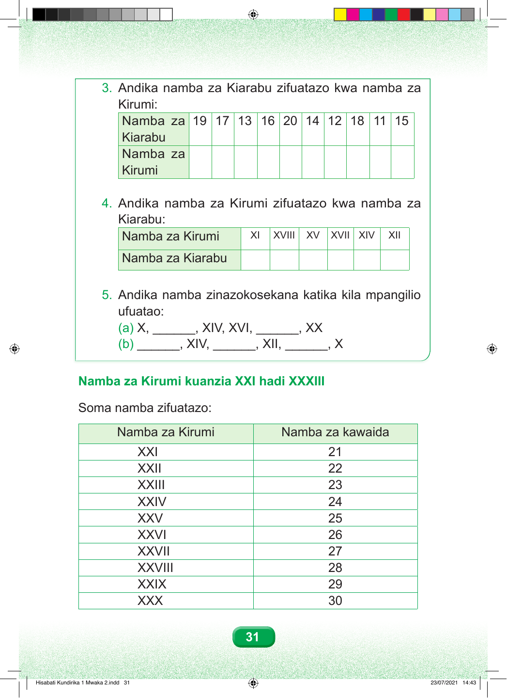

Swali namba tatu. Andika namba za Kiarabu zifuatazo kwa namba za Kirumi. Jedwali lina mistari miwili. Mstari wa juu una namba za Kiarabu. Mstari wa chini una nafasi za kuandika namba za Kirumi. Soma namba za Kiarabu kutoka kulia kwenda kushoto: kumi na tano, kumi na moja, kumi na nane, kumi na mbili, kumi na nne, ishirini, kumi na sita, kumi na tatu, kumi na saba, na kumi na tisa. Andika alama ya Kirumi inayolingana chini ya kila namba. Swali namba nne. Andika namba za Kirumi zifuatazo kwa namba za Kiarabu. Jedwali lina mistari miwili. Mstari wa juu una alama za Kirumi. Mstari wa chini una nafasi za kuandika namba za Kiarabu. Soma kutoka kulia kwenda kushoto. Alama ya kwanza ni X ikifuatiwa na I mbili. Ya pili ni X ikifuatiwa na I kabla ya V. Ya tatu ni X ikifuatiwa na V na I mbili. Ya nne ni X ikifuatiwa na V. Ya tano ni X ikifuatiwa na V na I tatu. Ya sita ni X ikifuatiwa na I moja. Andika namba ya Kiarabu inayolingana chini ya kila alama. Swali namba tano. Andika namba zinazokosekana katika kila mpangilio ufuatao. Sehemu a. Soma kutoka kulia kwenda kushoto. Herufi X mbili, nafasi ya kwanza iliyo wazi, X ikifuatiwa na V na I moja, X ikifuatiwa na I kabla ya V, nafasi ya pili iliyo wazi, kisha herufi X moja. Jaza nafasi mbili bila kubadilisha mpangilio. Sehemu b. Soma kutoka kulia kwenda kushoto. Herufi X moja, nafasi ya kwanza iliyo wazi, X ikifuatiwa na I mbili, nafasi ya pili iliyo wazi, X ikifuatiwa na I kabla ya V, kisha nafasi ya tatu iliyo wazi. Jaza nafasi tatu bila kubadilisha mpangilio. Namba za Kirumi kuanzia ishirini na moja hadi thelathini na tatu. Soma jedwali lifuatalo mstari kwa mstari kutoka juu kwenda chini. Sehemu iliyopo kwenye ukurasa huu inaanzia ishirini na moja hadi thelathini. Jedwali lina safu wima mbili. Safu ya kwanza ina alama za Kirumi. Safu ya pili ina namba za kawaida. Mstari wa kwanza. Alama ya Kirumi ni herufi X mbili zikifuatiwa na I moja. Inawakilisha namba ishirini na moja. Mstari wa pili. Alama ya Kirumi ni herufi X mbili zikifuatiwa na I mbili. Inawakilisha namba ishirini na mbili. Mstari wa tatu. Alama ya Kirumi ni herufi X mbili zikifuatiwa na I tatu. Inawakilisha namba ishirini na tatu. Mstari wa nne. Alama ya Kirumi ni herufi X mbili zikifuatiwa na I kabla ya V. Inawakilisha namba ishirini na nne. Mstari wa tano. Alama ya Kirumi ni herufi X mbili zikifuatiwa na V. Inawakilisha namba ishirini na tano. Mstari wa sita. Alama ya Kirumi ni herufi X mbili zikifuatiwa na V na I moja. Inawakilisha namba ishirini na sita. Mstari wa saba. Alama ya Kirumi ni herufi X mbili zikifuatiwa na V na I mbili. Inawakilisha namba ishirini na saba. Mstari wa nane. Alama ya Kirumi ni herufi X mbili zikifuatiwa na V na I tatu. Inawakilisha namba ishirini na nane. Mstari wa tisa. Alama ya Kirumi ni herufi X mbili zikifuatiwa na I kabla ya X. Inawakilisha namba ishirini na tisa. Mstari wa kumi. Alama ya Kirumi ni herufi X tatu. Inawakilisha namba thelathini.